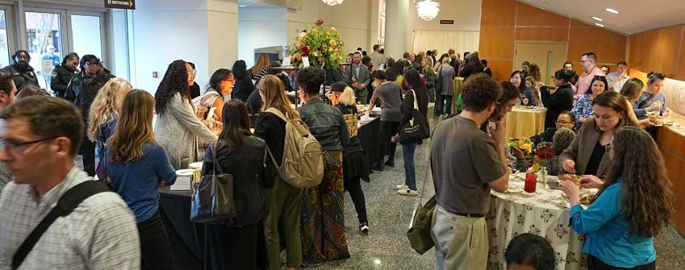
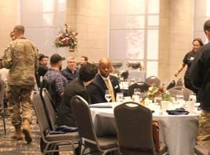
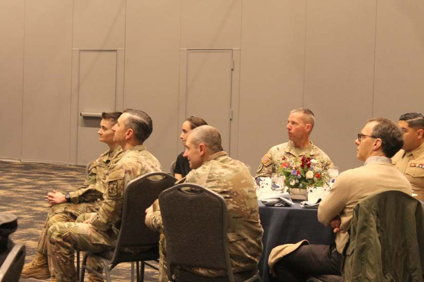
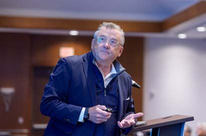
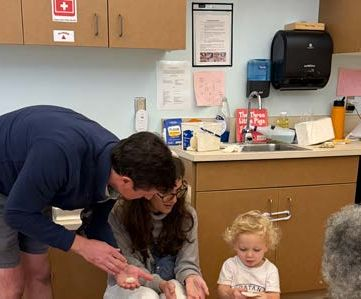

Inside this issue
November 2026.
Editor's Reflection
The ones who hold us up.
November invites us to slow down and recognize the people who make a difference in our lives. With Veterans Day just behind us and Thanksgiving ahead, I have been thinking about gratitude, not only as something we say, but as something we practice.
My time in the United States Air Force taught me that no mission is accomplished alone. Every success rests on people who hold each other up, especially when things are hard. I see that at Vanderbilt every day.
To our colleagues who have served in every branch of the Armed Forces: thank you. Vanderbilt is stronger because of the experience and leadership you bring.
Gratitude also lives in everyday moments: a colleague who steps in on a tough project, a leader who sees someone's potential, a simple thank you that reminds someone their work matters. Small moments, taken together, shape our culture.
So this season, tell someone you appreciate them. Thank a colleague whose work happens behind the scenes.
To every member of our Vanderbilt community: I can't take credit for the phrase, but you are “the ones who hold us up.” Thank you. It's Our Moment!

Cover Story · 2026 N2Growth Leaders40
One of forty.
Sydney Savion, Vice Chancellor of People, Culture and Belonging, is among 40 executives worldwide recognized with the 2026 Top Chief Human Resources Officer Award.
The annual N2Growth Leaders40 award is the benchmark for excellence in human resources. It celebrates the leaders shaping careers, cultures and talent at the world's most people-driven companies. This year, Vanderbilt's Sydney Savion is one of them.
Since joining Vanderbilt University in January 2024 as its inaugural Vice Chancellor for People, Culture and Belonging, Savion has built and led a transformative division responsible for the university's enterprise-wide people strategy: workforce development, employee experience, total rewards, health and wellbeing, and organizational culture.
Under her leadership, Vanderbilt has introduced the Talent Marketplace, the Futures Learning Hub, Vanderbilt Voyage and a modernized approach to performance management, creating new pathways for employee growth, leadership development and career mobility.
Her work is positioning Vanderbilt as a forward-thinking employer of choice, building the workforce infrastructure, culture and capabilities the university needs for its continued growth and ambitions.
“Sydney leads from the front. She knows staff of every level and station by name.”Tony Morales, Chairman of N2Growth
Morales noted that she stays highly visible on campus and makes clear that getting culture right is a strategic imperative for Vanderbilt.

About the award
The Leaders40 Top CHRO Award was first published on Forbes in 2015 and later co-launched with the Stanford Graduate School of Business in 2020 to strengthen the academic rigor of its methodology.
Each year the N2Growth selection committee evaluates thousands of nominations, interviews hundreds of executives and selects 40 CHROs who represent the standard of excellence in human capital management.
Staff Stories · Conversations with the people shaping Vanderbilt
Seeing bright futures.
Tina Soo, Program Coordinator in the Department of Economics, on graduate students, a homecoming 54 years in the making, and finding purpose in other people's growth.
What is your name, the department you work for, and your title?
My name is Tina Soo, and I work for the Department of Economics as a program coordinator for the Graduate Program in Economic Development and the Economics PhD.
Tell us about your career path that led you to your current role at Vanderbilt.
I graduated with a degree in Economics a long time ago, and worked at Belmont part time for about five years. After that I took a break, and now I've been at Vanderbilt for almost three years. I started out as a program specialist working with undergrads and now work with masters and PhD students.

What drew you to work at Vanderbilt?
I love working in academia. Getting the opportunity to interact with students, and see through their eyes just how bright everyone's future is, brings me a lot of joy.
What is one aspect of your job that might surprise others?
I think for me it's very surprising how hard the students here work. Since I didn't get a PhD, I didn't realize how long the hours were or how much they work.
“If I have contributed to any of that, then it gives me purpose.”Tina Soo
Why do you choose to stay and grow your career at Vanderbilt?
I just love seeing the growth of each of the individual students. It keeps me motivated and makes me happy. I feel like if I have contributed to any of that, then it gives me purpose.

Do you have a favorite meaningful moment of working at Vanderbilt?
Yes, I do! This past summer we had an alumna who graduated from our masters program in 1972 come to visit. She's from Turkey and this is the first time she's been back to Nashville since graduating. Her sons brought her back, and she was telling us about her time here, and remembering all the different things, and it was so sweet. Because it was summertime, she sat in one of the empty classrooms and pretended she was studying, and her sons took so many pictures, so that is something that really touched my heart.

Looking ahead, what keeps you motivated and engaged in your work?
What keeps me motivated is seeing our students progress every year. From their first year to when they graduate there's lots of maturity and growth. It's always changing, from what they know to their energy and how they feel, so that's really exciting.
Do you have a piece of advice for someone starting at Vanderbilt?
I feel that Vanderbilt is very welcoming and there are so many things that you can do here, so do your best and if you ever want to explore something that you think is interesting, Vanderbilt probably has it. That's what I love most about Vanderbilt; that no matter what your background is, you can find something here that is a good fit for you.
What is your favorite spot on campus?
There is this beautiful statue that is right outside Calhoun. If you walk out of the building it is to the left. I love all that bronze, so that is my favorite spot.
Sixth Annual Fall Staff Assembly
The staff behind the momentum.
Held Nov. 2 in Langford Auditorium, at the end of a year of record student demand and the close of the Dare to Grow campaign.
“I hope Vanderbilt is a place where you can see the difference your work makes.”Chancellor Daniel Diermeier
The Chancellor continued: “Where you can continue to grow into your own fullest potential. And where you can take pride not only in what we accomplish together, but in the way we accomplish it: with excellence, with care and with a deep sense of responsibility to one another. Thank you for the talent you bring to Vanderbilt.”
From the podium.
USAC President Jeremy Bourgoin reported wins on parental leave, holidays and the retirement match. Vice Chancellor Sydney Savion closed with a charge to the room: “Keep showing up for each other the way you already do.”


Staff awards.
Staff were honored in seven categories: Community Impact, Innovation Excellence, Leadership Excellence, Professional Excellence, Research Excellence, Student Impact and Dare to Grow.
Thanks from students.
Senior Kylar Larson introduced a video tribute from undergraduates and thanked staff on behalf of the student body.
Veterans Day Breakfast
Honoring those who served.
This year's Veterans Day Breakfast brought Vanderbilt veterans together in recognition of their service, sacrifice and contributions to the university community.
The event provided an opportunity to express gratitude to those who have served in the Armed Forces and to recognize the experiences, leadership and perspectives they bring to Vanderbilt.



To all veterans, thank you for your service. We are grateful to have you as part of the Vanderbilt community.

Leadership Redefined Symposium
A fourth cohort convenes.
On Thursday, October 29, PCB hosted the Leadership Redefined Symposium for its fourth cohort. Speakers included Chancellor Daniel Diermeier and Vice Chancellors Steve Ertel, John Lutz, Candice Storey Lee and Sydney Savion.
Leadership Redefined is Vanderbilt University's premier development program for leaders, sponsored by the Chancellor. Grounded in the university's bold vision and culture, the program challenges participants to explore, shape and redefine what leadership means in a complex, rapidly changing environment.



Chancellor Diermeier, Vice Chancellors John Lutz and Steve Ertel. The symposium opened with Third Coast Comedy.
Health, Wellbeing & Belonging
Make gratitude a habit.
Gratitude gets a lot of attention this time of year, but it can be more than a seasonal tradition. Practicing gratitude is simply taking time to notice the people, moments and experiences that bring something positive to our lives. With practice, it becomes a natural part of how we move through the day.
Give a Shoutout
Recognize a colleague who made a difference with a Shoutout in Personify Health. Whether they offered support, went the extra mile or brightened your day, a Shoutout is a simple way to show your appreciation.
Double points in November. Earn double points for giving and receiving Shoutouts all month long.
Small ways to practice gratitude
Tap each card to swap the old habit for a new one.



Child & Family Center
One hundred days of clay.
During Acorn's annual Back to School Night on October 27, families joined their children for creative play activities as part of the 100 Days of Clay initiative.
Launched in 2025, the initiative offers daily, age-appropriate opportunities for children to explore clay and clay-like materials through hands-on sensory play, encouraging creativity, emotional expression and imaginative thinking.

Anchor's Edge
Have a topic in mind?
Anchor's Edge webinars are postponed until further notice, but we're always looking for new ideas. Is there a topic you'd like to explore or something you're passionate about sharing? Suggest a future webinar topic or express your interest in presenting.
Contact Justin Grunert at justin.grunert@vanderbilt.edu.
Around Campus · Times are Central
Around campus.

An annual tradition
Turkey Toss.
December 11, 6 a.m. to 6 p.m., Student Life Center. Choose a Vanderbilt beanie or a frozen turkey, including regular, halal and tofurkey options. Light refreshments, games, winter crafts and swag. Bring your Vanderbilt ID or proof of employment.

A small thank you
Black and gold, no orange.
Working over Thanksgiving? Vanderbilt Athletics is offering eligible staff up to two complimentary tickets to the final home game against Tennessee on Nov. 28, while supplies last. Kickoff is 6 or 6:30 p.m. Wear black and gold.
VUEFBUTLet's connect.
- Website
- vanderbilt.edu/pcb
- pcb@vanderbilt.edu
- Address
- 110 21st Ave S, Suite 1000
Baker Building - Follow PCB
- Instagram @vupcb
LinkedIn VU PCB
Vol 3.11 · November 2026 · Anchor Down!
Built to WCAG 2.2 AA. Trouble reading this issue? Email pcb@vanderbilt.edu.